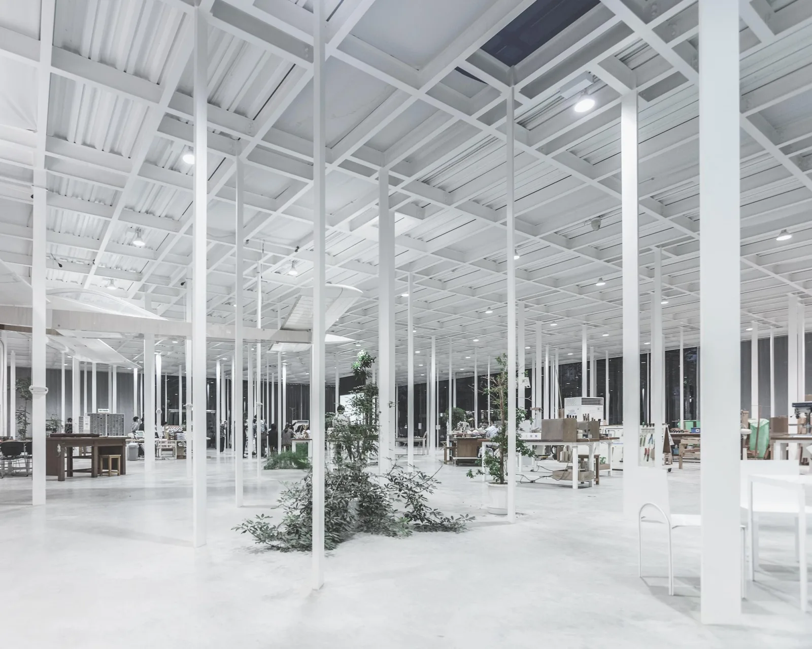
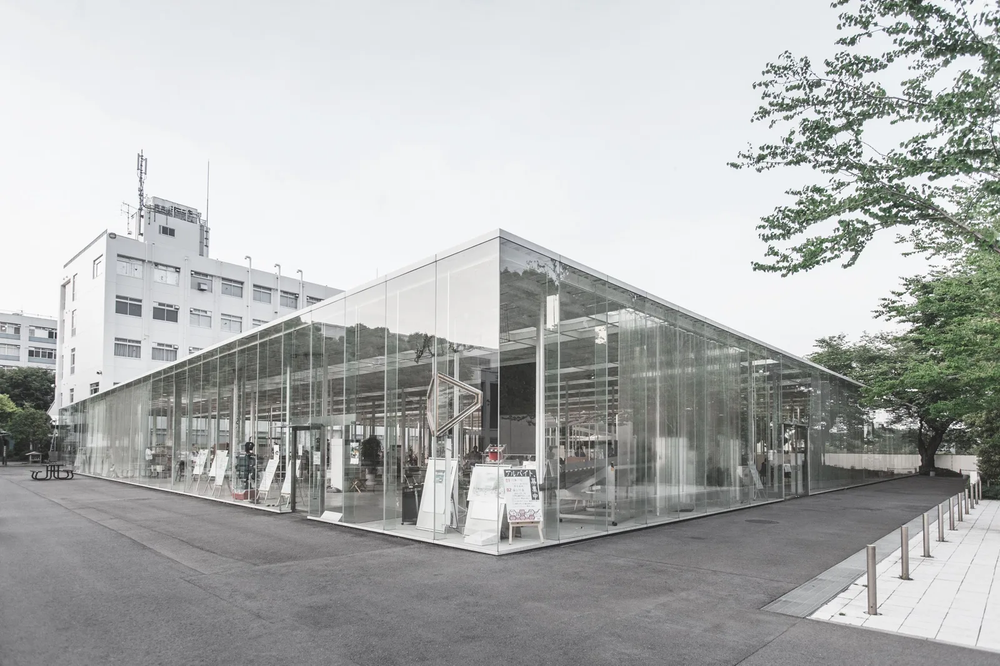
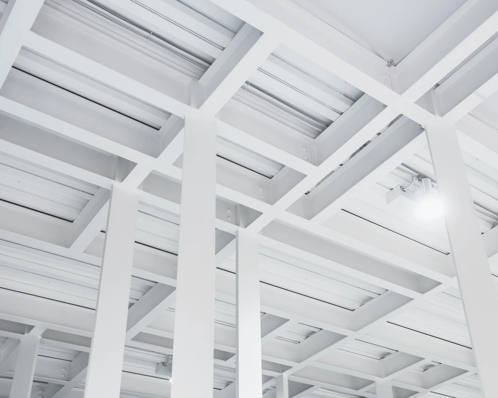
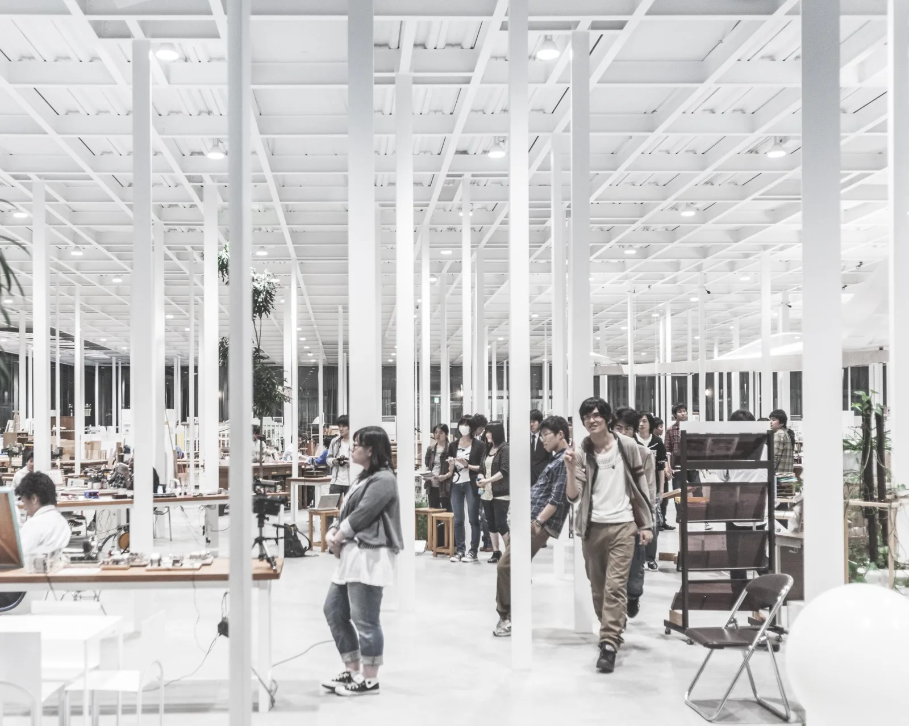
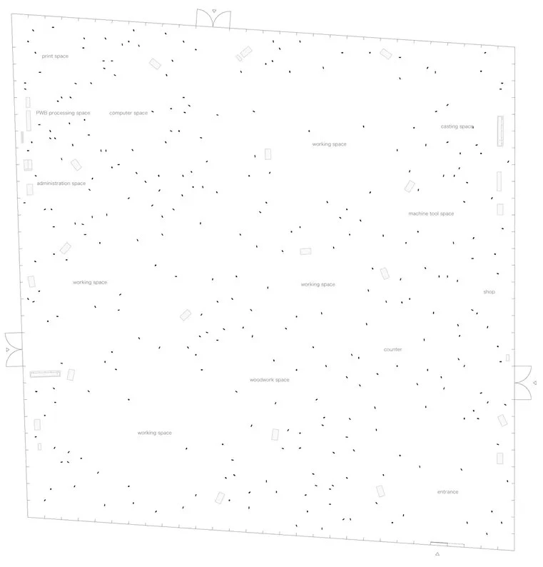
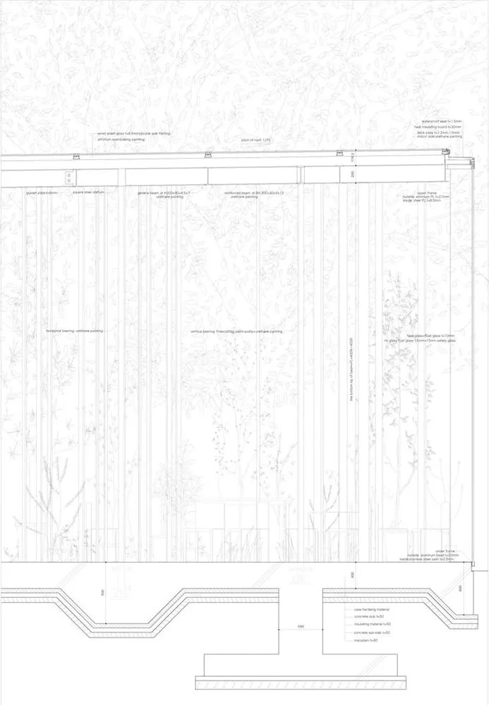

← Precedent index / 08 of 52
Student workshop · 2008
KAIT Workshop Junya Ishigami
A university facility for students’ independent creative activities, with tools, equipment and specialist support in one shared interior.
Slender columns, furniture and equipment define different places within a room without internal dividing walls. The result is an open field of work areas, with a sense of distinction between activities despite their visual continuity.
Facility account — Kanagawa Institute of Technology ↗

Fig. 01 InteriorRasmus Hjortshoj - COAST for Divisare photographs. Supplemental drawings published by ArchEyes. Online source Relevant connections THINK Students develop ideas and resolve problems as part of their creative projects.
MAKE The workshop provides equipment and space for material experiments, models and prototypes.
Images and drawings / 06

Fig. 02 ExteriorRasmus Hjortshoj - COAST for Divisare photographs. Supplemental drawings published by ArchEyes. Online source 
Fig. 03 Roof structureRasmus Hjortshoj - COAST for Divisare photographs. Supplemental drawings published by ArchEyes. Online source 
Fig. 04 Workshop in useRasmus Hjortshoj - COAST for Divisare photographs. Supplemental drawings published by ArchEyes. Online source 
Fig. 05 Plan - workshopRasmus Hjortshoj - COAST for Divisare photographs. Supplemental drawings published by ArchEyes. Online source 
Fig. 06 Section - detailed constructionRasmus Hjortshoj - COAST for Divisare photographs. Supplemental drawings published by ArchEyes. Online source ← All 52 precedents Online sources for this project Next: House and Restaurant →